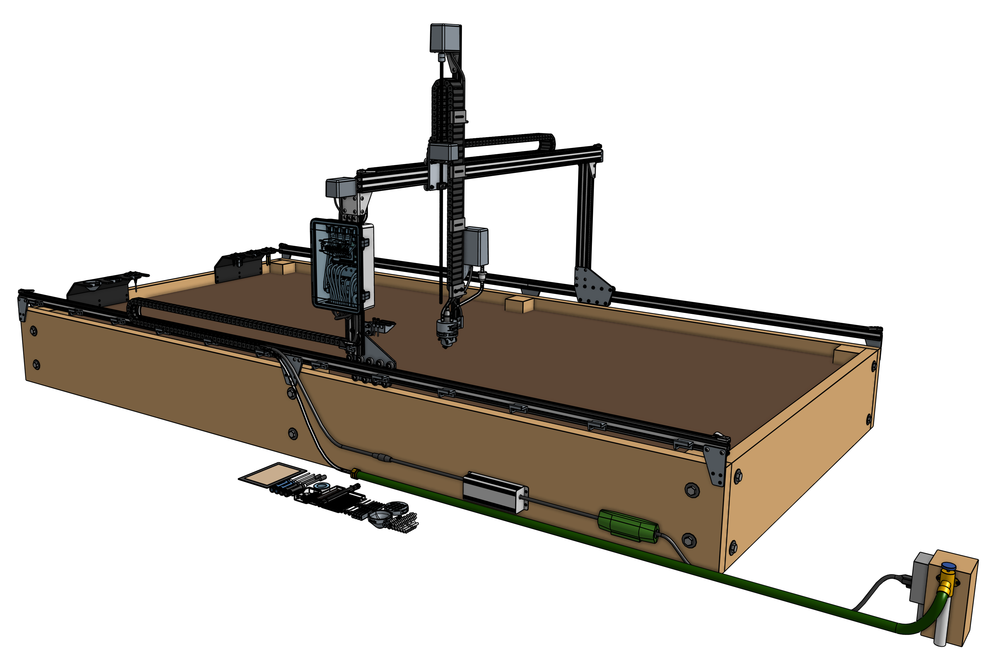
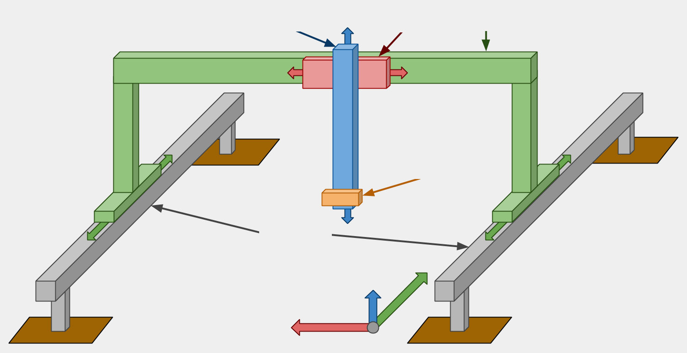
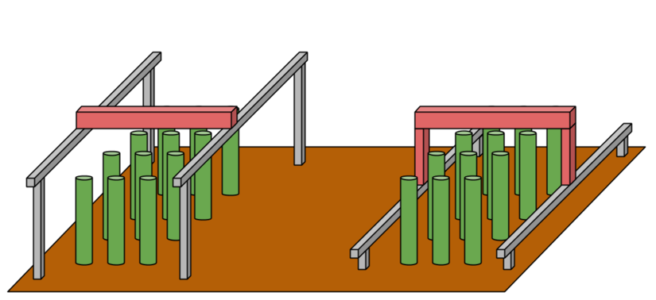

Overview
{kind=link}
AgriBot is primarily constructed from V-slot aluminum extrusions and aluminum plates and brackets.
They are driven by four NEMA 17 stepper motors with rotary encoders, the Agriduino electronics board, and a Raspberry Pi 3 computer.
Current models cover growing areas as small 1m2 up to a maximum of 18m2, and plants as tall as 1m.
Architecture
{kind=link}
Tracks
{kind=link}
Tracks are one of the components that really differentiate AgriBot from traditional free-driving wheeled tractors.
The tracks are what allow the system to have great precision in an efficient and simple manner. There are many reasons of why tracks are superior, a few of which are listed below.
Tracks provide great precision and allow the AgriBot to return to the same position repeatedly.
Any type of packing structure of plants can be created and managed.
Tracks take up less area than paths for tractor wheels and do not compact the soil.
Gantry
The gantry is the the structural component that bridges the two tracks and moves along the x-axis via a belt and pulley drive system.
It also serves as a linear guide for the cross-slide to move across the gantry along the y-axis.
The gantry can also serve as a base for mounting other tools, electronics, supplies, and/or sensors.
Cross-slide
The cross-slide moves across the gantry along the y-axis.
This motion provides the second major degree of freedom for AgriBots and allows operations such as planting to be done anywhere in the X/Y plane.
The cross-slide is moved using a belt and pulley drive system and serves as the base for the z-axis to attach to.
Z-axis
The z-axis attaches to the cross-slide and provides the AgriBot with movement along the z-axis.
It serves as the base for attaching the universal tool mount and other tools.